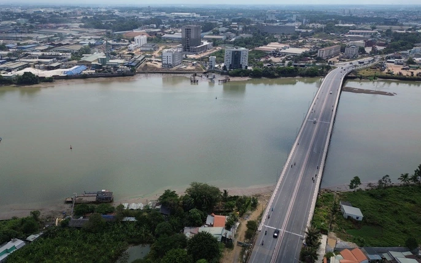

Công trình giao thông quan trọng tại tỉnh Bình Dương
Cầu An Hảo là cây cầu quan trọng nối TP. Thủ Dầu Một với TP. Thuận An, thuộc tỉnh Bình Dương. Cầu góp phần kết nối các khu công nghiệp, khu dân cư và tạo điều kiện phát triển kinh tế – xã hội địa phương.
| Tên chính thức | Cầu An Hảo |
|---|---|
| Tên nhân gian | Cầu An Hảo Bình Dương |
| Vị trí | Nối TP. Thủ Dầu Một – TP. Thuận An (Bình Dương) |
| Bắc qua | Rạch Bà Lụa |
| Năm khởi công | Khoảng năm 2013 |
| Năm hoàn thành | Khoảng năm 2014 |
| Chiều dài | Khoảng 200 m |
| Chiều rộng | 15 m |
| Tải trọng thiết kế | HL-93 |
| Loại kiến trúc | Cầu dầm bê tông cốt thép |
| Đơn vị thiết kế | Sở Giao thông Vận tải tỉnh Bình Dương |
| Đơn vị thi công | Các đơn vị xây dựng giao thông địa phương |
| Tổng mức đầu tư | Hơn 100 tỷ đồng (ước tính theo dự án địa phương) |
Cầu An Hảo giúp giảm áp lực giao thông nội tỉnh, kết nối các khu công nghiệp lớn của Bình Dương với trung tâm hành chính. Công trình góp phần thúc đẩy phát triển đô thị, thương mại và nâng cao chất lượng hạ tầng giao thông địa phương.
Sau khi hoàn thành và đưa vào sử dụng, cầu An Hảo đã giúp giải quyết tình trạng ùn tắc kéo dài trong khu vực và tạo thuận lợi cho việc lưu thông hàng hóa.

Cầu An Hảo tại tỉnh Bình Dương
Video thực tế khu vực cầu An Hảo
Nếu video không hiển thị, xem trực tiếp tại: YouTube – cầu An Hảo
| Tên cầu | Chiều dài | Năm hoàn thành | Loại cầu |
|---|---|---|---|
| Cầu An Hảo | 200 m | 2014 | Bê tông cốt thép |
| Cầu Đồng Nai | 461 m | 2009 | Bê tông cốt thép |
| Cầu Sài Gòn | 1.010 m | 1961 | Bê tông cốt thép |